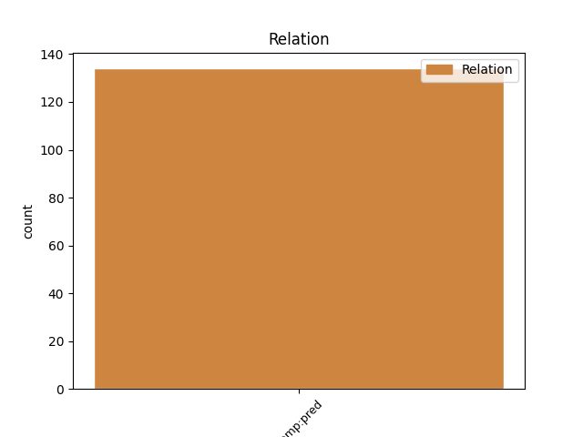
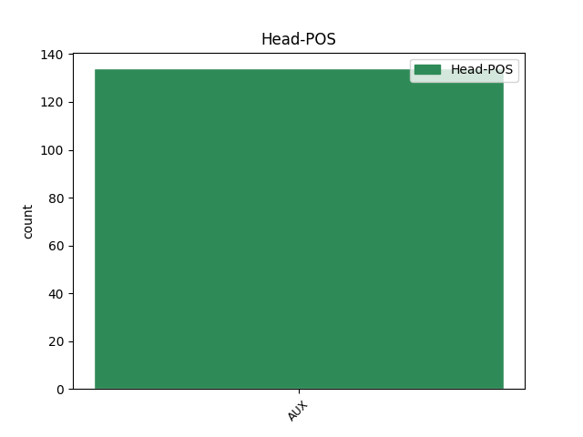
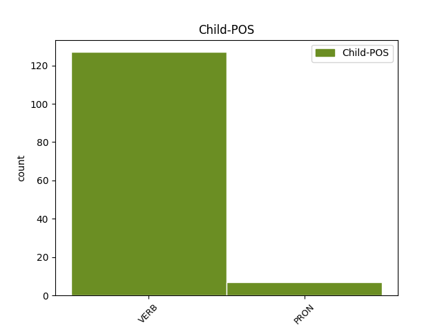

Distribution of features within this leaf



Agreement Rules sorted by frequency.
- When the dependent token is the predicative complements(comp:pred) of the head token, and the dependent token is VERB.
1 פרוף _ _ _ _ 0 _ _ _
2 מרין _ _ _ _ 0 _ _ _
3 סירב _ _ _ _ 0 _ _ _
4 להגיב _ _ _ _ 0 _ _ _
5 ב _ _ _ _ 0 _ _ _
6 סוף _ _ _ _ 0 _ _ _
7 ה _ _ _ _ 0 _ _ _
8 שבוע _ _ _ _ 0 _ _ _
9 , _ _ _ _ 0 _ _ _
10 אך _ _ _ _ 0 _ _ _
11 ב _ _ _ _ 0 _ _ _
12 ראיון _ _ _ _ 0 _ _ _
13 ש _ _ _ _ 0 _ _ _
14 התפרסם _ _ _ _ 0 _ _ _
15 שלשום _ _ _ _ 0 _ _ _
16 ב _ _ _ _ 0 _ _ _
17 " _ _ _ _ 0 _ _ _
18 כלבו _ _ _ _ 0 _ _ _
19 " _ _ _ _ 0 _ _ _
20 הוא _ _ _ _ 0 _ _ _
21 אמר _ _ _ _ 0 _ _ _
22 : _ _ _ _ 0 _ _ _
23 " _ _ _ _ 0 _ _ _
24 כל _ _ _ _ 0 _ _ _
25 רצון_ _ _ _ _ 0 _ _ _
26 _של_ _ _ _ _ 0 _ _ _
27 _אני _ _ _ _ 0 _ _ _
28 היה היה AUX AUX Gender=Masc|Number=Sing|Person=3|Polarity=Pos|Tense=Past|VerbType=Cop 0 _ _ _
29 ש _ _ _ _ 0 _ _ _
30 יאפשרו אפשר VERB VERB Gender=Fem,Masc|HebBinyan=PIEL|Number=Plur|Person=3|Tense=Fut|Voice=Act 28 comp:pred _ _
31 ל_ _ _ _ _ 0 _ _ _
32 _אני _ _ _ _ 0 _ _ _
33 לאחר _ _ _ _ 0 _ _ _
34 התמסרות _ _ _ _ 0 _ _ _
35 של _ _ _ _ 0 _ _ _
36 שמונה _ _ _ _ 0 _ _ _
37 שנים _ _ _ _ 0 _ _ _
38 לנתח _ _ _ _ 0 _ _ _
39 גם _ _ _ _ 0 _ _ _
40 ב _ _ _ _ 0 _ _ _
41 מרכז _ _ _ _ 0 _ _ _
42 חורב _ _ _ _ 0 _ _ _
43 . _ _ _ _ 0 _ _ _
1 ה _ _ _ _ 0 _ _ _
2 מסקנה _ _ _ _ 0 _ _ _
3 ה _ _ _ _ 0 _ _ _
4 בלתי _ _ _ _ 0 _ _ _
5 - _ _ _ _ 0 _ _ _
6 נמנעת _ _ _ _ 0 _ _ _
7 היא הוא AUX AUX Gender=Fem|Number=Sing|Person=3|Polarity=Pos|VerbForm=Part|VerbType=Cop 0 _ _ _
8 , _ _ _ _ 0 _ _ _
9 ל _ _ _ _ 0 _ _ _
10 מרבה _ _ _ _ 0 _ _ _
11 ה _ _ _ _ 0 _ _ _
12 צער _ _ _ _ 0 _ _ _
13 , _ _ _ _ 0 _ _ _
14 רק _ _ _ _ 0 _ _ _
15 זו זו PRON PRON Gender=Fem|Number=Sing|Person=3|PronType=Dem 7 comp:pred _ SpaceAfter=No
16 : _ _ _ _ 0 _ _ _
17 אם _ _ _ _ 0 _ _ _
18 צרות _ _ _ _ 0 _ _ _
19 גדולות _ _ _ _ 0 _ _ _
20 מלמדות _ _ _ _ 0 _ _ _
21 ש _ _ _ _ 0 _ _ _
22 ה _ _ _ _ 0 _ _ _
23 אל _ _ _ _ 0 _ _ _
24 זועף _ _ _ _ 0 _ _ _
25 , _ _ _ _ 0 _ _ _
26 הרי _ _ _ _ 0 _ _ _
27 ה _ _ _ _ 0 _ _ _
28 ניגוסים _ _ _ _ 0 _ _ _
29 ה _ _ _ _ 0 _ _ _
30 קטנים _ _ _ _ 0 _ _ _
31 ה _ _ _ _ 0 _ _ _
32 אלה _ _ _ _ 0 _ _ _
33 מלמדים _ _ _ _ 0 _ _ _
34 ש _ _ _ _ 0 _ _ _
35 הוא _ _ _ _ 0 _ _ _
36 כבר _ _ _ _ 0 _ _ _
37 לא _ _ _ _ 0 _ _ _
38 זועף _ _ _ _ 0 _ _ _
39 . _ _ _ _ 0 _ _ _
Disagree Examples:
1 מן _ _ _ _ 0 _ _ _
2 ה _ _ _ _ 0 _ _ _
3 גינוי _ _ _ _ 0 _ _ _
4 ה _ _ _ _ 0 _ _ _
5 כוללני _ _ _ _ 0 _ _ _
6 ה _ _ _ _ 0 _ _ _
7 זה _ _ _ _ 0 _ _ _
8 ברור _ _ _ _ 0 _ _ _
9 , _ _ _ _ 0 _ _ _
10 ש _ _ _ _ 0 _ _ _
11 לא _ _ _ _ 0 _ _ _
12 אקט _ _ _ _ 0 _ _ _
13 זה _ _ _ _ 0 _ _ _
14 או _ _ _ _ 0 _ _ _
15 אחר _ _ _ _ 0 _ _ _
16 הוא הוא AUX AUX Gender=Masc|Number=Sing|Person=3|Polarity=Pos|VerbForm=Part|VerbType=Cop 0 _ _ _
17 ה _ _ _ _ 0 _ _ _
18 מפריע הפריע VERB VERB Gender=Masc|HebBinyan=HIFIL|Number=Sing|Person=1,2,3|VerbForm=Part|Voice=Act 16 comp:pred _ _
19 ל _ _ _ _ 0 _ _ _
20 שגב _ _ _ _ 0 _ _ _
21 ( _ _ _ _ 0 _ _ _
22 ו _ _ _ _ 0 _ _ _
23 ב _ _ _ _ 0 _ _ _
24 רשימה_ _ _ _ _ 0 _ _ _
25 _של_ _ _ _ _ 0 _ _ _
26 _הוא _ _ _ _ 0 _ _ _
27 נכללו _ _ _ _ 0 _ _ _
28 תיאורי _ _ _ _ 0 _ _ _
29 ביטוי _ _ _ _ 0 _ _ _
30 ו _ _ _ _ 0 _ _ _
31 התנהגות _ _ _ _ 0 _ _ _
32 , _ _ _ _ 0 _ _ _
33 ש _ _ _ _ 0 _ _ _
34 אינם _ _ _ _ 0 _ _ _
35 נראים _ _ _ _ 0 _ _ _
36 גם _ _ _ _ 0 _ _ _
37 ל_ _ _ _ _ 0 _ _ _
38 _אני _ _ _ _ 0 _ _ _
39 ) _ _ _ _ 0 _ _ _
40 , _ _ _ _ 0 _ _ _
41 אלא _ _ _ _ 0 _ _ _
42 ה _ _ _ _ 0 _ _ _
43 מסכת _ _ _ _ 0 _ _ _
44 כולה _ _ _ _ 0 _ _ _
45 _היא _ _ _ _ 0 _ _ _
46 . _ _ _ _ 0 _ _ _
1 יש _ _ _ _ 0 _ _ _
2 יותר _ _ _ _ 0 _ _ _
3 מ _ _ _ _ 0 _ _ _
4 סיכוי _ _ _ _ 0 _ _ _
5 טוב _ _ _ _ 0 _ _ _
6 להניח _ _ _ _ 0 _ _ _
7 ש _ _ _ _ 0 _ _ _
8 אילו _ _ _ _ 0 _ _ _
9 מערכת _ _ _ _ 0 _ _ _
10 ה _ _ _ _ 0 _ _ _
11 חינוך _ _ _ _ 0 _ _ _
12 ו _ _ _ _ 0 _ _ _
13 כלי _ _ _ _ 0 _ _ _
14 ה _ _ _ _ 0 _ _ _
15 תקשורת _ _ _ _ 0 _ _ _
16 היו היה AUX AUX Gender=Fem,Masc|Number=Plur|Person=3|Polarity=Pos|Tense=Past|VerbType=Cop 0 _ _ _
17 שומרים שמר VERB VERB Gender=Masc|HebBinyan=PAAL|Number=Plur|Person=1,2,3|VerbForm=Part|Voice=Act 16 comp:pred _ _
18 על _ _ _ _ 0 _ _ _
19 איזון _ _ _ _ 0 _ _ _
20 עדין _ _ _ _ 0 _ _ _
21 ו _ _ _ _ 0 _ _ _
22 מורכב _ _ _ _ 0 _ _ _
23 בין _ _ _ _ 0 _ _ _
24 ה _ _ _ _ 0 _ _ _
25 צו _ _ _ _ 0 _ _ _
26 ה _ _ _ _ 0 _ _ _
27 לאומי _ _ _ _ 0 _ _ _
28 ל _ _ _ _ 0 _ _ _
29 ה_ _ _ _ _ 0 _ _ _
30 צו _ _ _ _ 0 _ _ _
31 ה _ _ _ _ 0 _ _ _
32 מוסרי _ _ _ _ 0 _ _ _
33 , _ _ _ _ 0 _ _ _
34 איזון _ _ _ _ 0 _ _ _
35 כ _ _ _ _ 0 _ _ _
36 ה_ _ _ _ _ 0 _ _ _
37 זה _ _ _ _ 0 _ _ _
38 היה _ _ _ _ 0 _ _ _
39 מצליח _ _ _ _ 0 _ _ _
40 להישמר _ _ _ _ 0 _ _ _
41 גם _ _ _ _ 0 _ _ _
42 ב _ _ _ _ 0 _ _ _
43 ה_ _ _ _ _ 0 _ _ _
44 מסע _ _ _ _ 0 _ _ _
45 ל _ _ _ _ 0 _ _ _
46 פולין _ _ _ _ 0 _ _ _
47 . _ _ _ _ 0 _ _ _
1 יש _ _ _ _ 0 _ _ _
2 יותר _ _ _ _ 0 _ _ _
3 מ _ _ _ _ 0 _ _ _
4 סיכוי _ _ _ _ 0 _ _ _
5 טוב _ _ _ _ 0 _ _ _
6 להניח _ _ _ _ 0 _ _ _
7 ש _ _ _ _ 0 _ _ _
8 אילו _ _ _ _ 0 _ _ _
9 מערכת _ _ _ _ 0 _ _ _
10 ה _ _ _ _ 0 _ _ _
11 חינוך _ _ _ _ 0 _ _ _
12 ו _ _ _ _ 0 _ _ _
13 כלי _ _ _ _ 0 _ _ _
14 ה _ _ _ _ 0 _ _ _
15 תקשורת _ _ _ _ 0 _ _ _
16 היו _ _ _ _ 0 _ _ _
17 שומרים _ _ _ _ 0 _ _ _
18 על _ _ _ _ 0 _ _ _
19 איזון _ _ _ _ 0 _ _ _
20 עדין _ _ _ _ 0 _ _ _
21 ו _ _ _ _ 0 _ _ _
22 מורכב _ _ _ _ 0 _ _ _
23 בין _ _ _ _ 0 _ _ _
24 ה _ _ _ _ 0 _ _ _
25 צו _ _ _ _ 0 _ _ _
26 ה _ _ _ _ 0 _ _ _
27 לאומי _ _ _ _ 0 _ _ _
28 ל _ _ _ _ 0 _ _ _
29 ה_ _ _ _ _ 0 _ _ _
30 צו _ _ _ _ 0 _ _ _
31 ה _ _ _ _ 0 _ _ _
32 מוסרי _ _ _ _ 0 _ _ _
33 , _ _ _ _ 0 _ _ _
34 איזון _ _ _ _ 0 _ _ _
35 כ _ _ _ _ 0 _ _ _
36 ה_ _ _ _ _ 0 _ _ _
37 זה _ _ _ _ 0 _ _ _
38 היה היה AUX AUX Gender=Masc|Number=Sing|Person=3|Polarity=Pos|Tense=Past|VerbType=Cop 0 _ _ _
39 מצליח הצליח VERB VERB Gender=Masc|HebBinyan=HIFIL|HebSource=ConvUncertainHead|Number=Sing|Person=1,2,3|VerbForm=Part|Voice=Act 38 comp:pred _ _
40 להישמר _ _ _ _ 0 _ _ _
41 גם _ _ _ _ 0 _ _ _
42 ב _ _ _ _ 0 _ _ _
43 ה_ _ _ _ _ 0 _ _ _
44 מסע _ _ _ _ 0 _ _ _
45 ל _ _ _ _ 0 _ _ _
46 פולין _ _ _ _ 0 _ _ _
47 . _ _ _ _ 0 _ _ _
1 רוב _ _ _ _ 0 _ _ _
2 ה _ _ _ _ 0 _ _ _
3 באים _ _ _ _ 0 _ _ _
4 להספידו _ _ _ _ 0 _ _ _
5 את _ _ _ _ 0 _ _ _
6 _הוא _ _ _ _ 0 _ _ _
7 , _ _ _ _ 0 _ _ _
8 אני _ _ _ _ 0 _ _ _
9 מנחש _ _ _ _ 0 _ _ _
10 , _ _ _ _ 0 _ _ _
11 לא _ _ _ _ 0 _ _ _
12 היו היה AUX AUX Gender=Fem,Masc|Number=Plur|Person=3|Polarity=Pos|Tense=Past|VerbType=Cop 0 _ _ _
13 מצביעים הצביע VERB VERB Gender=Masc|HebBinyan=HIFIL|Number=Plur|Person=1,2,3|VerbForm=Part|Voice=Act 12 comp:pred _ _
14 עבור_ _ _ _ _ 0 _ _ _
15 _הוא _ _ _ _ 0 _ _ _
16 . _ _ _ _ 0 _ _ _
1 כש _ _ _ _ 0 _ _ _
2 רץ _ _ _ _ 0 _ _ _
3 ל _ _ _ _ 0 _ _ _
4 ה_ _ _ _ _ 0 _ _ _
5 כנסת _ _ _ _ 0 _ _ _
6 נדמה נדמה VERB VERB Gender=Masc|HebBinyan=NIFAL|Number=Sing|Person=1,2,3|VerbForm=Part|Voice=Mid 7 comp:pred _ _
7 היה היה AUX AUX Gender=Masc|Number=Sing|Person=3|Polarity=Pos|Tense=Past|VerbType=Cop 0 _ _ _
8 ל _ _ _ _ 0 _ _ _
9 רבים _ _ _ _ 0 _ _ _
10 ש _ _ _ _ 0 _ _ _
11 הוא _ _ _ _ 0 _ _ _
12 מסכן _ _ _ _ 0 _ _ _
13 את _ _ _ _ 0 _ _ _
14 ה _ _ _ _ 0 _ _ _
15 דמוקרטיה _ _ _ _ 0 _ _ _
16 . _ _ _ _ 0 _ _ _